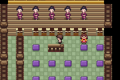
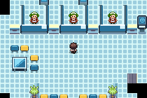
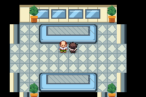
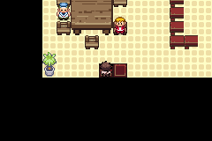
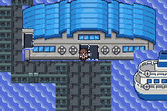

Native gameplay views
Original240×160 frames; no enlarging or simulated gameplay. Complete native tours and static layout previews are separately labelled.











Final BUILD11, Ecruteak E2 / Olivine O1. All21 serial test stages and60 local automated CI commands passed on the exact delivery bytes. This is scripted normal-controller mGBA gameplay and native visual inspection, separate from owner Delta acceptance.
Game source 489c404346f572aefb6856b3dd48a9b364a08ceb
ROM SHA256 df69e014e706168c56180828487a9ab12709a9bccd3dff063fee5f7af5d4f2f4
Original240×160 frames; no enlarging or simulated gameplay. Complete native tours and static layout previews are separately labelled.





The BEFORE gate clip is intentionally historical, defective BUILD10. All AFTER/current clips use final BUILD11. More recordings are in each city folder and the doorway gallery.
Owner Delta/visual acceptance is pending. DS projection, approved custom Gyms and original Black Ledger locations are documented adaptations. Other-region voyages, DS online services and unapproved story/rewards/badges are outside this city map pass. Reference-view limits and unplayed inactive field states are recorded in the combined report. No private saves, ROMs, snapshots or memory dumps are included in this evidence.